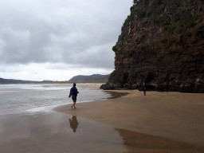
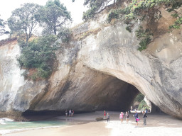

{kind=link}
{kind=link}

kuva 3

{kind=link}
kuva 4
{kind=link}

{kind=link}
kuva 6
Nam ac vulputate lacus. Phasellus interdum, lacus id placerat auctor, urna sem hendrerit erat, quis cursus nunc odio ac metus. Aenean pharetra mauris gravida risus elementum iaculis. Nunc tristique vulputate viverra. Aenean tincidunt metus vel pulvinar fermentum. Pellentesque eu nunc consequat, tempor quam a, cursus ex. Interdum et malesuada fames ac ante ipsum primis in faucibus. Vestibulum ante ipsum primis in faucibus orci luctus et ultrices posuere cubilia Curae;
Nullam viverra tellus vel ligula bibendum, id porttitor purus tempor. Nulla viverra erat vel felis varius, sit amet ultricies justo congue. Vestibulum pulvinar, orci vel pulvinar maximus, quam elit commodo nunc, nec venenatis quam est quis quam. Praesent vitae massa in ligula venenatis interdum. Nullam porttitor magna eget augue pharetra fringilla. Proin elit leo, auctor in aliquam ac, consequat eget purus. Aliquam erat volutpat. Pellentesque pharetra, felis at gravida vestibulum, magna lorem feugiat metus, ac convallis metus purus sed mi. In ultrices odio nec turpis egestas ornare. Sed nec ipsum nec mi dignissim volutpat. Nam efficitur, lorem a luctus porta, nulla dolor molestie augue, id venenatis quam mi in libero. Vestibulum dignissim sem nec auctor posuere. Nam malesuada erat eu metus auctor accumsan.
Phasellus finibus convallis velit blandit placerat. Vestibulum egestas, risus quis tristique sollicitudin, urna massa convallis mauris, non interdum ex est in dolor. Vestibulum viverra suscipit erat nec bibendum. Ut at tortor condimentum, vestibulum tortor non, fringilla felis. Aliquam vel nunc quis lacus consequat efficitur nec in quam. Nunc dictum rutrum nisl, vel rutrum ex varius sit amet. Sed augue lacus, sodales a ultricies eu, molestie tempus purus. Aliquam sit amet mi ac elit mollis varius. Suspendisse dignissim, arcu et laoreet lacinia, ipsum lorem fermentum libero, tincidunt dignissim velit purus interdum orci. Mauris elementum, nisl in aliquam pretium, risus mi posuere quam, sed fermentum arcu odio vitae quam. Nunc et aliquet risus, vel tristique nunc. Phasellus pellentesque, sem id commodo egestas, lectus dui interdum nunc, sit amet auctor nibh metus sagittis justo. Curabitur dictum elit tellus, in mollis nulla lobortis a. In hac habitasse platea dictumst.
{kind=link}